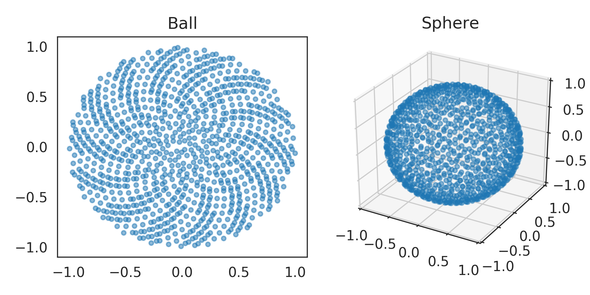

nengolib.stats.ScatteredHypersphere¶
-
stats.sphere= ScatteredHypersphere(surface=True, base=Rd())¶
-
stats.ball= ScatteredHypersphere(surface=False, base=Rd())¶
-
class
nengolib.stats.ScatteredHypersphere(surface, base=Rd())[source]¶ Number–theoretic distribution over the hypersphere and hyperball.
Applies the
spherical_transform()to the number-theoretic sequenceRdto obtain uniformly scattered samples.This distribution has the nice mathematical property that the discrepancy between the empirical distribution and \(n\) samples is \(\widetilde{\mathcal{O}}\left(\frac{1}{n}\right)\) as opposed to \(\mathcal{O}\left(\frac{1}{\sqrt{n}}\right)\) for the Monte Carlo method. [1] This means that the number of samples are effectively squared, making this useful as a means for sampling
eval_pointsandencodersin Nengo.See Sampling High-Dimensional Vectors for mathematical details.
Parameters: Other Parameters: - base :
nengo.dists.Distribution, optional The base distribution from which to draw quasi Monte Carlo samples. Defaults to
Rdand should not be changed unless you have some alternative number-theoretic sequence over[0, 1].
See also
sphere,ball,nengo.dists.UniformHypersphere,Rd,Sobol,spherical_transform(),ScatteredCubeNotes
The
RdandSoboldistributions are deterministic. Nondeterminism comes from a randomd–dimensional rotation (seerandom_orthogonal()).The nengolib logo was created using this class with the Sobol sequence.
References
[1] K.-T. Fang and Y. Wang, Number-Theoretic Methods in Statistics. Chapman & Hall, 1994. Examples
>>> from nengolib.stats import ball, sphere >>> b = ball.sample(1000, 2) >>> s = sphere.sample(1000, 3)
>>> import matplotlib.pyplot as plt >>> from mpl_toolkits.mplot3d import Axes3D >>> plt.figure(figsize=(6, 3)) >>> plt.subplot(121) >>> plt.title("Ball") >>> plt.scatter(*b.T, s=10, alpha=.5) >>> ax = plt.subplot(122, projection='3d') >>> ax.set_title("Sphere").set_y(1.) >>> ax.patch.set_facecolor('white') >>> ax.set_xlim3d(-1, 1) >>> ax.set_ylim3d(-1, 1) >>> ax.set_zlim3d(-1, 1) >>> ax.scatter(*s.T, s=10, alpha=.5) >>> plt.show()
Attributes: - min_magnitude
A parameter where the value is a number.
- surface
A parameter where the value is a boolean.
Methods
sample(n[, d, rng])Samples npoints inddimensions.- base :